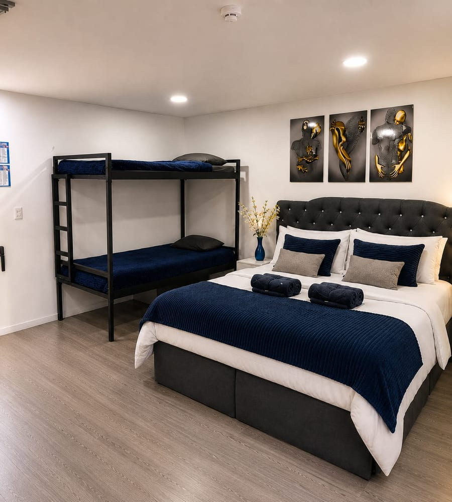

Suite 301
Hasta 7 huespedes
1 cama doble con cama nido debajo, 1 camarote y 1 sofa cama
1 bano
Suite amplia y elegante, automatizada con Alexa: enciendes luces, televisor y musica con la voz. Se entra por puerta inteligente con clave digital, y la barra es el punto de reunion. A una cuadra tienes supermercados, droguerias, panaderias y restaurantes, y en quince minutos caminando estas en el centro historico y la Catedral de Sal.
Desde $ 150.000 / noche
Consultar